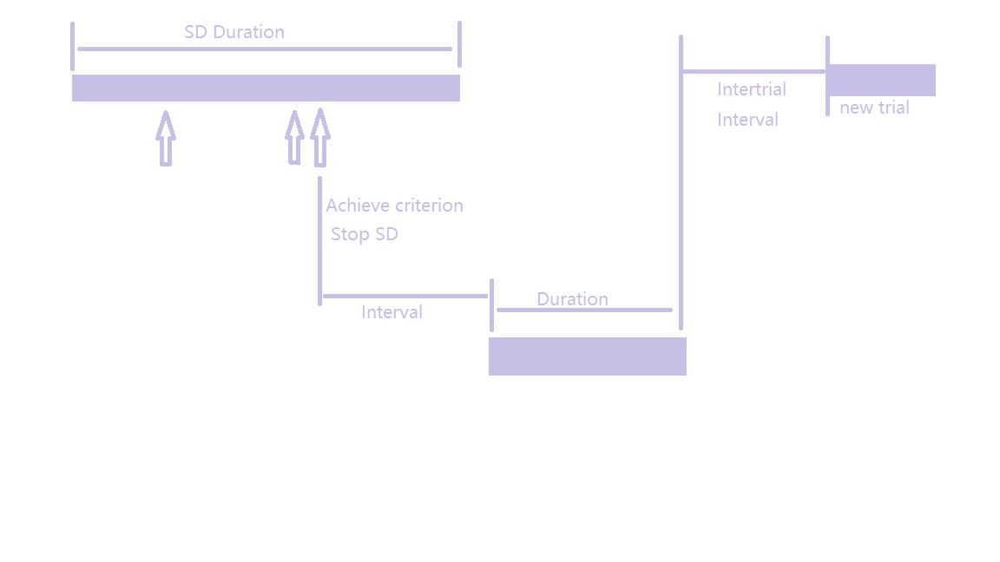

SD stands for discriminative stimulus which acts as the necessity of achievement of the criterion. It means that only when the discriminative stimulus is presented to the rat, and the rat achieves the criterion (in this project, is to press the button for required times.), food will be rewarded. If SD is not presented, no matter whether the rat presses the button, the action will not lead to reward.
How to use the interface
a) If user need to do the pre-test of hardware, check the box of PRE-TEST MODE without any other entry
b) If user need to implement the experiment and load previous configuration, check the box of load-config?. In this case, user do not need to enter any parameter below; Otherwise, user can enter new parameters and these will be saved into the file automatically.
c) Parameters
Criterion: the number of presses that the rat need to complete to get reward
Interval: the time needed to between achieving the criterion and delivering the food
Duration: the time that the reward is presented to the rat
SD Duration: the time that the discriminative stimulus will last for
Intertrial interval: the time that need to delay before starting a new trial
(Above entries will be saved into the configuration file)
d) Press start to execute the experiment, and during this process, user can terminate the experiment at any time by pressing the exit button.
Here's the link for the code